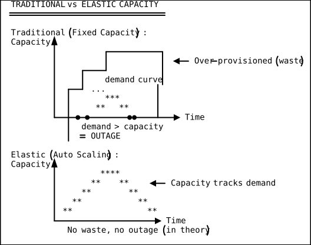
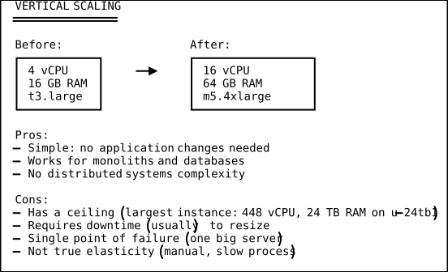
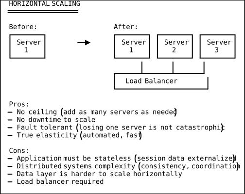
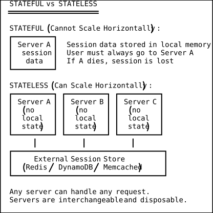
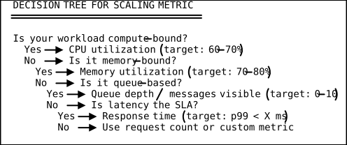
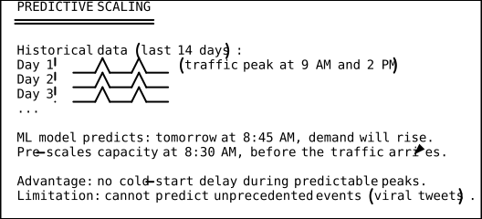
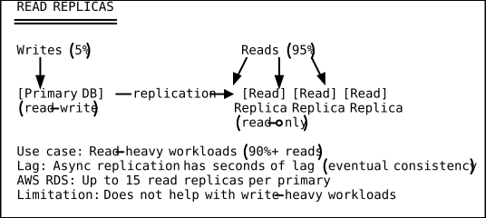
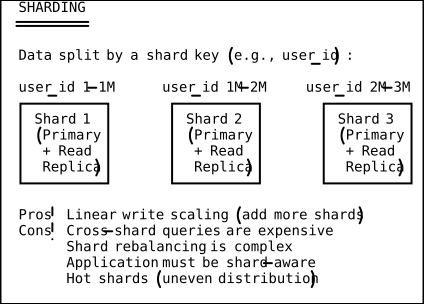
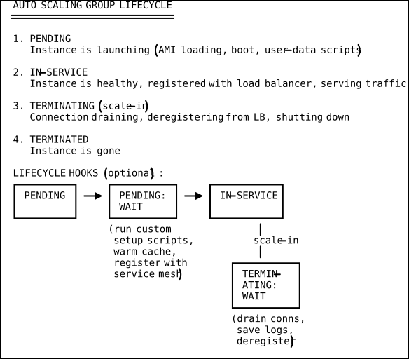

Elasticity and Scaling Mental Model
Core Idea: Capacity Should Match Demand
In a traditional data center, capacity is a step function: you buy servers in batches, and capacity jumps up in large increments. Demand, meanwhile, is a continuous curve that rises and falls with business cycles, time of day, marketing campaigns, and viral events.
The gap between the capacity step function and the demand curve is waste (when capacity exceeds demand) or failure (when demand exceeds capacity).
Cloud elasticity closes this gap. Capacity can scale continuously to match demand — up when traffic rises, down when it falls.

Vertical vs Horizontal Scaling
There are two fundamental approaches to adding capacity.
Vertical Scaling (Scale Up)
Replace a server with a bigger server: more CPU, more RAM, faster storage. Simple but limited.

Horizontal Scaling (Scale Out)
Add more servers of the same size. More complex but virtually unlimited.

The Stateless Design Requirement
Horizontal scaling only works if each server can handle any request without depending on local state from a previous request. This means:

What Must Be Externalized
| State Type | Where to Store It |
|---|---|
| User sessions | Redis, Memcached, DynamoDB |
| File uploads | S3, GCS, Azure Blob Storage |
| Application config | Parameter Store, Secrets Manager, env vars |
| Job queues | SQS, RabbitMQ, Kafka |
| Cache | ElastiCache (Redis/Memcached), CloudFront |
| Logs | CloudWatch, ELK, Datadog |
Scaling Triggers and Metrics
Auto scaling requires a signal: when should the system add or remove capacity? The signal comes from metrics.
Common Scaling Metrics
| Metric | Good For | Watch Out For |
|---|---|---|
| CPU utilization | Compute-bound workloads | Not useful for I/O-bound |
| Memory utilization | Memory-intensive apps | Slow to change |
| Request count | Web servers, APIs | Includes health checks |
| Queue depth (SQS) | Async processing workers | Best for decoupled arch |
| Active connections | WebSocket, long-lived conns | Connection reuse skews |
| Response latency | Latency-sensitive apps | Spikes may be transient |
| Custom business | Application-specific | Requires instrumentation |
| metric (orders/sec) |
Which Metric to Choose

Scaling Policies: Target Tracking, Step, and Predictive
Target Tracking Scaling
The simplest and most common policy. You set a target value for a metric, and the auto scaler adjusts capacity to maintain that target.
TARGET TRACKING
================
Policy: "Keep average CPU at 60%"
If CPU > 60%: add instances to bring average down
If CPU < 60%: remove instances to bring average up
It's like a thermostat:
- Target temperature: 72F
- Too hot? Turn on AC (add instances)
- Too cold? Turn off AC (remove instances)
Step Scaling
More granular control. Different scaling actions for different severity levels.
STEP SCALING
=============
CPU 50-60%: do nothing (within target)
CPU 60-70%: add 1 instance
CPU 70-80%: add 2 instances
CPU 80-90%: add 3 instances
CPU > 90%: add 5 instances
CPU 40-50%: remove 1 instance
CPU < 40%: remove 2 instances
Advantage: proportional response to demand changes.
The bigger the spike, the more aggressively you scale out.
Predictive Scaling
Uses machine learning to forecast demand based on historical patterns and scales proactively. Available in AWS Auto Scaling.

Scale-Out vs Scale-In Asymmetry
A critical operational principle: scale out aggressively, scale in conservatively. The costs of each mistake are asymmetric.
SCALING ASYMMETRY
==================
Scale out too slowly: Users see errors, latency spikes, SLA breach.
Cost: Revenue loss, reputation damage, SLA penalties.
Scale in too aggressively: Users see errors when traffic returns.
Cost: Same as above -- you removed capacity too soon.
Scale out too aggressively: You pay for unused instances for a few
minutes until the scaler adjusts.
Cost: Small amount of wasted compute (dollars, not outages).
Scale in too slowly: You pay for unused instances longer than needed.
Cost: Slightly higher bill (controllable, not catastrophic).
CONCLUSION:
- Scale OUT: fast, aggressive, trigger at lower thresholds
- Scale IN: slow, conservative, add cooldown periods
Cooldown Periods
After a scaling action, the system waits for a cooldown period before evaluating again. This prevents oscillation (rapid scale out/in cycles).
WITHOUT COOLDOWN:
Time 0: CPU > 70% -> add 2 instances
Time 1: CPU < 40% (new instances reduced avg) -> remove 2 instances
Time 2: CPU > 70% (back to where we started) -> add 2 instances
...OSCILLATION!
WITH COOLDOWN (5 minutes):
Time 0: CPU > 70% -> add 2 instances -> start 5-min cooldown
Time 1: CPU < 40% -> IGNORED (cooldown active)
Time 3: CPU = 55% -> IGNORED (cooldown active)
Time 5: Cooldown expires -> evaluate: CPU = 58% -> stable
Connection Draining and Graceful Shutdown
When scaling in (removing instances), you cannot just terminate a server that is actively handling requests. Connection draining allows in-flight requests to complete before the instance is removed.
CONNECTION DRAINING
====================
1. Auto scaler decides to terminate Instance C
2. Load balancer stops sending NEW requests to Instance C
3. Instance C continues processing IN-FLIGHT requests
4. After drain timeout (e.g., 300 seconds) or all requests complete:
5. Instance C is terminated
Timeline:
|-- new requests --|-- draining --|-- terminated
[A B C serving] [A B serving] [A B serving]
[C draining] [C gone]
Deregistration delay: 300s (default on ALB)
If requests take longer, they are forcefully terminated.
Session Affinity (Sticky Sessions)
Session affinity routes all requests from the same user to the same backend server. This is sometimes necessary for stateful applications that have not been fully externalized.
STICKY SESSIONS
================
Without stickiness:
Request 1 -> Server A (sets session in local memory)
Request 2 -> Server B (no session! User logged out!)
Request 3 -> Server C (no session! User logged out again!)
With stickiness (cookie-based):
Request 1 -> Server A (sets session, LB sets cookie: srv=A)
Request 2 -> Server A (cookie says srv=A, routed to A)
Request 3 -> Server A (cookie says srv=A, routed to A)
Problems with stickiness:
- Uneven load: if many sticky users land on Server A, it's overloaded
- Scaling: can't remove Server A without losing those sessions
- Failover: if Server A dies, sticky users lose their sessions
RECOMMENDATION: Externalize sessions to Redis/DynamoDB.
Stickiness is a temporary workaround, not a design pattern.
Database Scaling Challenges
Databases are the hardest layer to scale horizontally because they maintain state and consistency guarantees.
Read Replicas

Sharding (Horizontal Partitioning)

Connection Pooling
CONNECTION POOLING
===================
Without pooling:
100 app servers x 10 connections each = 1,000 DB connections
Each connection: ~10 MB memory on the DB server
Total: 10 GB just for connections
With pooling (PgBouncer / RDS Proxy):
100 app servers -> [Connection Pooler] -> 50 DB connections
(multiplexes 1000 (DB handles 50
app connections actual connections)
onto 50 real ones)
RDS Proxy: Managed connection pooler
- Reduces DB connections by 90%+
- Handles failover transparently
- Supports IAM authentication
- ~$0.015/vCPU/hour
The Scaling Equation
Capacity planning can be expressed as an optimization problem:
THE SCALING EQUATION
=====================
capacity = f(demand, latency_target, cost_budget)
WHERE:
- demand = current requests per second (or projected)
- latency_target = p99 response time SLA (e.g., < 200ms)
- cost_budget = maximum $/hour willing to spend
EXAMPLE:
- Demand: 10,000 requests/second
- Each instance handles 500 req/s at p99 < 200ms
- Minimum instances: 10,000 / 500 = 20 instances
- Add 50% headroom for spikes: 30 instances
- Add N+1 for failure tolerance: 31 instances
- Budget: 31 * $0.0832/hr (c5.xlarge) = $2.58/hr = $1,886/month
AT WHAT POINT DOES COST EXCEED BUDGET?
- If demand grows 3x (30,000 req/s): 93 instances = $5,657/month
- Option 1: Accept higher cost
- Option 2: Optimize app to handle more req/s per instance
- Option 3: Use cheaper instances (Graviton: 20% cheaper)
- Option 4: Cache more aggressively (reduce req/s reaching app)
Auto Scaling Group Lifecycle
Understanding the ASG lifecycle helps debug scaling issues.

Warm Pools
Cold-starting new instances takes time: boot the OS, install software, warm the cache, etc. This can take 3-10 minutes, which is too slow for sudden traffic spikes.
Warm pools keep pre-initialized instances in a stopped (or running) state, ready to be added to the ASG in seconds instead of minutes.
WARM POOL
==========
ASG Active: [A] [B] [C] (serving traffic)
Warm Pool: [D] [E] (stopped, pre-initialized)
(AMI booted, software installed, config loaded)
(Cost: only EBS storage, no compute charges when stopped)
Traffic spike:
ASG Active: [A] [B] [C] [D] [E] (D and E started from warm pool)
(Time to serve: 30-60 seconds
vs 3-10 minutes cold launch)
Real-World Scaling Stories
Pokémon GO Launch (July 2016)
Niantic expected 5x their base traffic at launch. Actual traffic was 50x — 10 times their worst-case projection. Google Cloud (their provider) helped them scale, but the first week was plagued by outages.
Lesson: Predictive scaling has limits. Load testing should include scenarios at 10-50x expected demand, not just 2-5x.
Amazon Prime Day
Amazon’s auto scaling infrastructure handles one of the largest planned traffic events on the internet. In 2023, Prime Day processed over 375 million items in 48 hours.
Key patterns:
- Pre-scaling: capacity is added days before the event
- Feature flags: non-critical features are disabled to free resources
- Progressive rollout: deals launch in waves, not all at once
- Separate scaling for each microservice (hundreds of ASGs)
Slack’s Scaling Journey
Slack scaled from 0 to 12 million daily active users in 5 years. Their architecture evolved:
- Monolith (2013-2015): Single PHP application, vertical scaling
- Service extraction (2015-2017): Broke out messaging, search, notifications as separate services
- Kubernetes (2017-present): Container orchestration, horizontal pod autoscaler, cluster autoscaler
- Multi-region (2019-present): Active-active across AWS regions
Lesson: Scaling architecture evolves with demand. Do not over-engineer early; refactor when you hit real scaling limits.
DSA Connections
Dynamic Arrays (Amortized Resizing) — Auto Scaling Group Mechanics
A dynamic array (like Python’s list or Java’s ArrayList) doubles its backing storage when full, achieving O(1) amortized insertion despite occasional O(n) copy operations. Auto Scaling Groups follow the same pattern: capacity jumps in discrete increments (adding instances), and the system tolerates brief periods of over-provisioning after a scale-out event because the amortized cost of that extra capacity is low relative to the alternative of dropping requests. The document’s cooldown period is the scaling analog of the dynamic array’s “don’t resize again until the new capacity is actually needed” heuristic. Scale-out-fast/scale-in-slow mirrors the asymmetry in dynamic arrays, where shrinking is typically deferred until utilization falls below 25% (not 50%) to avoid thrashing — the exact same oscillation problem the cooldown mechanism prevents.
Consistent Hashing — Database Sharding and Cache Rebalancing
Consistent hashing arranges both servers and keys on a virtual ring, so adding or removing a node only redistributes keys from its immediate neighbors — O(K/n) keys move instead of O(K). In the context of the document’s database sharding section, this is exactly how distributed caches (e.g., Memcached rings) and storage systems like DynamoDB rebalance data when nodes scale in or out. When an auto-scaler adds a new cache node, only the keys that fall between the new node and its predecessor on the ring need to migrate, keeping rebalancing overhead minimal even under rapid scaling events. Without consistent hashing, adding a shard to the document’s user_id-based partitioning scheme would require rehashing all keys — an O(K) operation that defeats the purpose of elastic scaling.
Control Theory (PID Controllers) — Target Tracking Scaling Policy
Target tracking auto scaling is a discrete-time proportional-integral (PI) controller: the “error signal” is the difference between the current metric (e.g., CPU at 78%) and the target (50%), and the controller output is the number of instances to add or remove. The formula desired = ceil(current_capacity * current_metric / target) is a proportional controller (P-term), and the cooldown period acts as a low-pass filter to prevent derivative oscillation. Step scaling adds a nonlinear gain schedule (higher error = more aggressive response), which is equivalent to gain scheduling in control theory. Predictive scaling adds a feedforward term based on historical patterns, analogous to a model-predictive controller that anticipates disturbances before they arrive.
Load Balancing as Scheduling — Weighted Round-Robin and Least Connections
The document’s load balancer distributing requests across horizontally-scaled instances is a classic scheduling problem. Round-robin is the scheduling equivalent of FIFO with time-slicing: each server gets requests in cyclic order, O(1) per dispatch, no state required. Least-connections is a priority-queue-based scheduler: the load balancer maintains a min-heap of servers keyed by active connection count, dispatching to the minimum in O(log n) time. Weighted round-robin assigns capacity-proportional shares, equivalent to the Weighted Fair Queuing algorithm used in network packet scheduling. The choice between these algorithms mirrors the classic scheduling trade-off: simpler algorithms (round-robin) have lower dispatch overhead but worse load distribution, while stateful algorithms (least-connections) achieve better balance at the cost of maintaining per-server state.
Key Takeaways
-
Horizontal scaling beats vertical scaling. Vertical has a ceiling and a single point of failure. Horizontal is unlimited and fault- tolerant. Design for horizontal from the start.
-
Statelessness is the prerequisite. You cannot scale horizontally if servers hold local state. Externalize sessions, files, cache, and config to managed services.
-
Scale out fast, scale in slow. The cost of over-provisioning (wasted compute) is far less than the cost of under-provisioning (outage, SLA breach, lost revenue).
-
Target tracking is the right default. Set a target CPU/latency and let the auto scaler maintain it. Use step scaling for more granular control. Use predictive scaling for known patterns.
-
The database is the bottleneck. Read replicas, connection pooling, and caching address read scaling. Sharding addresses write scaling but adds significant complexity. Consider managed databases that handle scaling for you (Aurora, DynamoDB, Cloud Spanner).
-
Warm pools eliminate cold-start latency. For workloads with sudden spikes, keeping pre-initialized instances ready is worth the small storage cost.
-
The scaling equation is a trade-off. Capacity is a function of demand, latency targets, and cost budget. All three are levers you can adjust. When cost grows too fast, optimize the application or cache more aggressively before throwing more instances at the problem.
-
Load test beyond your predictions. Real traffic patterns routinely exceed projections by 5-50x. Test for the unexpected, not just the expected.